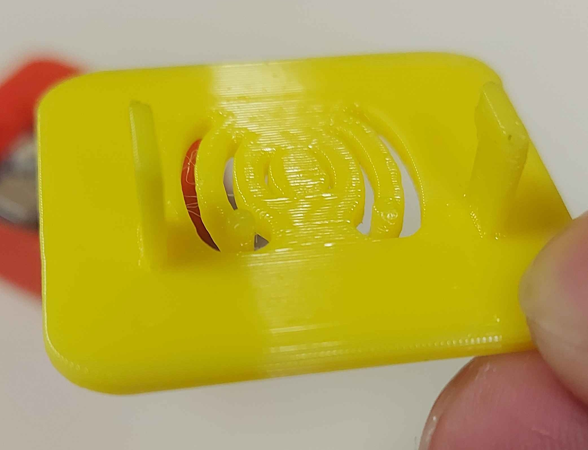
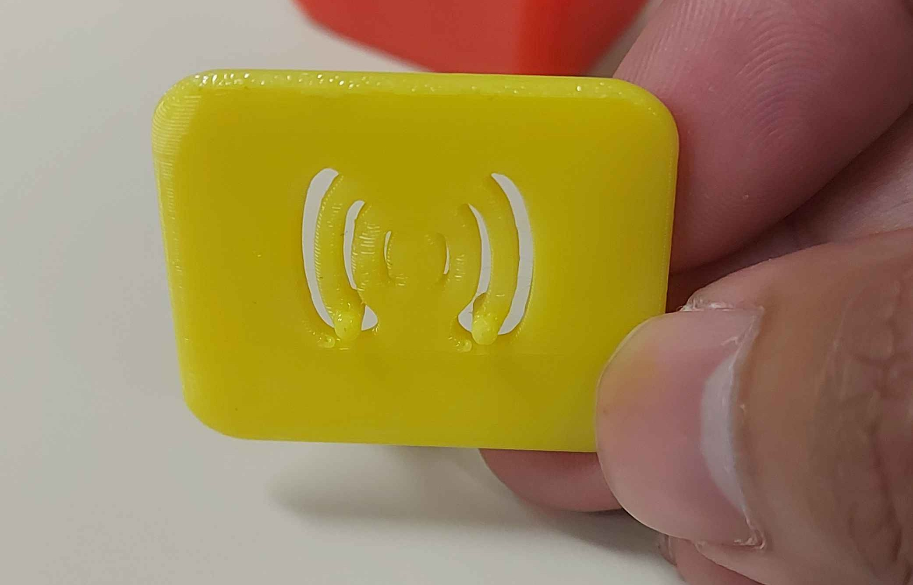
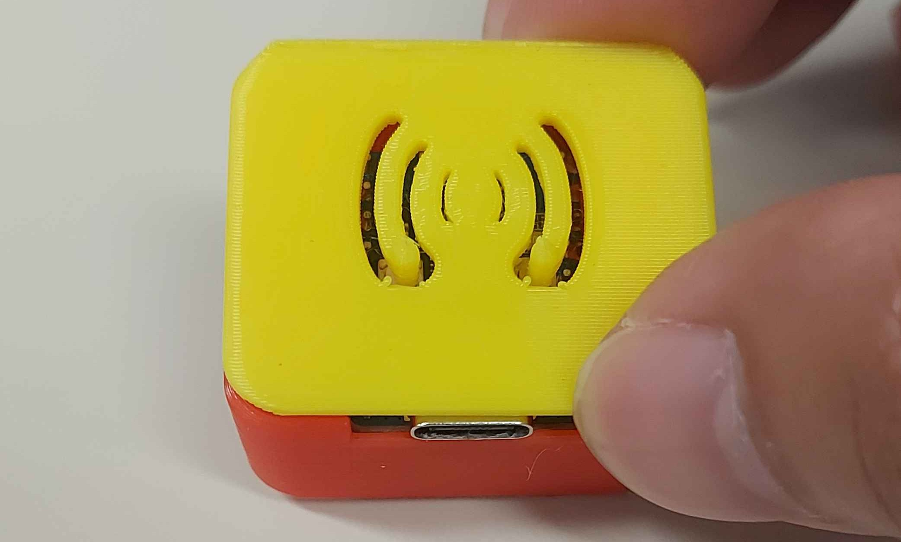

It may be successful, but it's not the best design.
ESP32 C3 ZERO Case attempt #6



I've almost got it right..But it's still imperfect..
Key features
- The microcontroller device is now fitted properly.
- Lock feature works (though not the greatest design due to wobbly)
- The wifi design itself acted as the very button.
Improvement(s) from the previous prototypes and how was it rectified?
- The ESP32 C3 ZERO buttons can now be clicked with easy access button design.
- The wifi design has made it possible or made itself useful and act as the accessible button.
My Conclusion and Why is this last design suitable?
- Although there are still things that needs improvement, having the last attempt should give you an idea of how it is supposed to be designed.
- It's very functional, it does the trick! It has a good ventilation, button, and case.
- I'm pretty happy with the current result, the design is not meant to be perfect right in the first place but the attempt and experience matters at the end of the day.